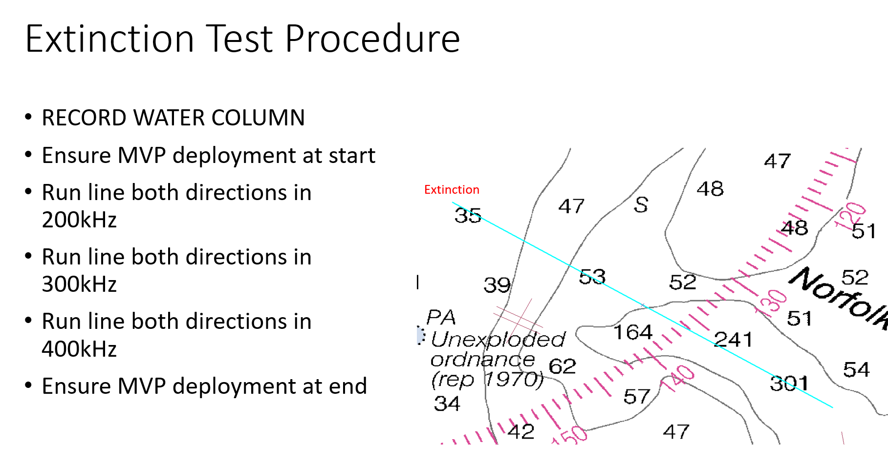

Extinction Test¶
The Extinction Test will take the data you provide and plot the outermost beam returns, giving you an idea of the maximum swath size versus depth. This information is useful in planning surveys, as you can predict the swath width in different areas.
The Extinction Test involves a line that is ideally run in both directions at multiple frequencies, that starts shallow and runs until you no longer get a return from the sonar, i.e. past the expected maximum depth of the system.
The image below shows an example plan for our extinction line:
{kind=link}
To run this process in Kluster, you need to:
Process the extinction lines.
Select the Converted entry for the Extinction lines in the Project Tree or if you only want to include specific lines, select those lines in the Project Tree or using the Select tool in 2d View.
Go to Visualize - Advanced Plots - Extinction Test
Select one of the three modes, the screenshot below shows the output for each mode for my dataset
{kind=link}
The Extinction Test provides a lot of useful information, let’s examine the image above for a moment. We can see that with the 200/300khz modes, we maintain about 6x water depth down to about 70 meters (this is a dual head system). The maximum swath size dips at 70 and 130 meters, probably because the sonar switched to another mode. What is interesting, is that the sonar appears to be in Long FM mode throughout the test, which is a mode you would expect to see in deeper water. This system might have been set to this mode during acquisition for some reason.
The maximum depth for all frequencies appears to be around 250 to 300 meters. You lose a great deal of swath width at 400 khz, as you can see the swath stays around 2x water depth throughout the depth ranges. At 200 meters, you appear to start losing the outer beams, as you can see the extinction line start trending inwards.